OpenLink Central Sidebar is an optional desktop feature which displays services as icons, organized within groups. It provides easy access to the functionality in OpenLink Central Control Panel, accessible from within a desktop. Sidebar items are also available in desktops via the OpenLink Central menus.
Changes made to either the Sidebar or OpenLink Central Control Panel (e.g., tabs, groups, services) are kept in sync with the other although changes are made in different ways in each feature.
· Closing OpenLink Central Sidebar does not terminate the system session as the OpenLink Central Control Panel does
· The Control Panel displays services as icons, grouped on tabs, while the Sidebar displays services as icons organized in groups
· The Control Panel displays “Favorites” as a row of icons below the tabs while the Sidebar organizes “Favorites” in a group within the panel
· Sidebar can be dragged and docked in another position in the desktop or dropped elsewhere a user’s screen
· Sidebar can be configured to show or hide a “Saved Desktops” group
· Sidebar supports “inline” configuration editing, meaning; it can be configured and changed while in use, including:
ü Groups can be created, renamed, copied, moved, and deleted
ü Services within groups can be renamed, moved between groups and/or copied to other groups
ü Display settings can configured according to user preference
The sidebar is available in versions 9.1r2 and above.
OpenLink Central Control Panel
OpenLink Central Configurations
OpenLink Desktop User Guide
Openlink_Desktop_Builder_User_Guide
OpenLink_Desktop_Component_Panel_Relationships_User_Guide
OpenLink_Desktop_Runtime_Configuration_User_Guide
OpenLink_Desktop_Tab_Layout_User_Guide
By default, this feature is deselected when building a desktop. Desktops can be configured to automatically display the OpenLink Central Sidebar when the desktop is launched. In these cases, the Sidebar is accessed by launching a configured desktop as follows:
1. Using the Desktop icon from OpenLink Central Control Panel, select and open an existing desktop
OR
2. Open a desktop from any service containing the Desktop menu (i.e., “Trading Explorer Desktop”)
OR
3. Open a desktop using Launch Available Services.
The selected desktop will display with the OpenLink Central Sidebar if the desktop was configured to display the Sidebar by default. If it does not display, select ViewàShow OpenLink Central Sidebar.
The image below represents a desktop with Sidebar shown.
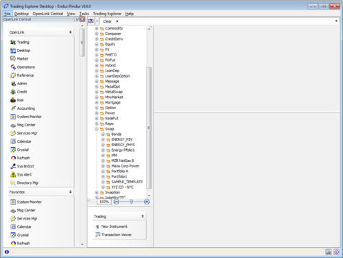
1. OpenLink Central Sidebar may be accessed outside of a desktop via Launch Available Services, OpenLink Central Sidebar.
This panel contains the following buttons:
|
Button |
Description |
|
|
Select this button to engage/disengage the Auto Hide functionality. The forward pointing pin indicates Auto Hide is not engaged. To activate Auto Hide functionality, click the pushpin icon; it will toggle to the side-facing image. Auto Hide functionality hides the Sidebar and displays an OpenLink Central tab for access to the functionality. Passing the mouse over the tab will cause the panel to display. Moving the mouse away from the tab causes it to hide. This functionality can also be accessed via a right-click on the Sidebar header (see OpenLink Central Sidebar Right Click Menus). Note: These buttons are only available when the Sidebar is accessed from within a desktop. |
|
Select this button to close the Sidebar panel. |
A Sidebar service can be launched by single-clicking the associated icon.
All groups can be collapsed and expanded by clicking anywhere in the group header. In the example below, the “OpenLink” group is expanded while the “Favorites” and “Saved Desktops” groups are collapsed.
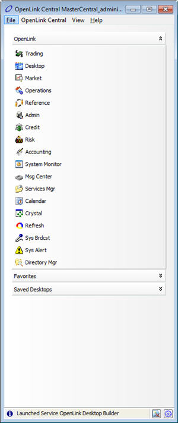
A variety of configuration functions are available within the Sidebar, as detailed throughout this page. Additional configurations may be performed in the OpenLink Desktop Builder, and OpenLink Central Configurations windows.
When defining a desktop in the OpenLink Desktop Builder, selecting the “Show OpenLink Central Sidebar” field will set the Sidebar to display in that desktop each time it is launched.
The OpenLink Central Configuration window is used to create and manage tabs, services and views in the Sidebar and Console. This window can be accessed from the OpenLink Central Console as well as from desktops.
1. From the OpenLink Central Console, select the OpenLink CentralàEdit Configuration menu.
2. From a desktop, select the OpenLink CentralàConfigurationàEdit Configuration menu.
All functionality provided by OpenLink Central Sidebar can be accessed via right-click menus. Four menus are available, depending upon where the Sidebar is right-clicked.
The Title Bar Menu is used to control the Sidebar “hide-and-float” functionality. The menu is accessed via a right-click on the OpenLink Central Sidebar Title Bar.
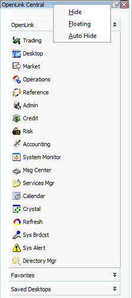
|
Menu Item |
Description |
|
Hide |
Removes the Sidebar from the window. |
|
Floating |
Separates the Sidebar from the window of origin. Once separated, the panel may be moved around the needed. |
|
Auto Hide |
Hides the Sidebar and displays an OpenLink Central tab for access to the functionality. Passing the mouse over the tab will cause the panel to display. Moving the mouse away from the tab will cause it to hide.
Note: This same functionality is accessed using the side-facing pushpin button. |
The OpenLink Central Sidebar Standard Menu contains menu items applicable to managing & configuring the OpenLink Central Sidebar. The menu is accessed via a right-click on the OpenLink Central Sidebar in an area other than a group or a service.
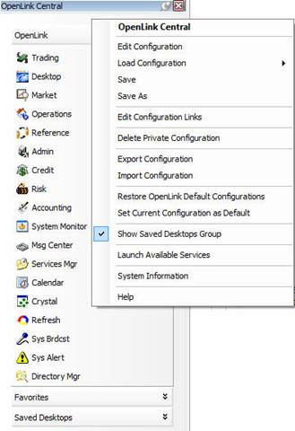
These menu items are also accessed from the OpenLink CentralàConfiguration menu and the OpenLink Central Control Panel contains similar menu items.
By right-clicking on a group, the additional Group Configuration and Group Settings menus are accessed.
· Group Configuration is used to configure groups on the Sidebar and includes add, copy, remove and configure the Sidebar groups
· Group Settings - specify display options for the selected group
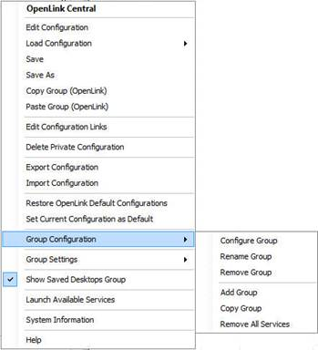
|
Menu Item |
Description |
|
Configure Group |
Displays the OpenLink Central Configurations window with the Tab Configuration tab selected. This tab allows users to create, edit, and delete tabs from the sidebar. Note: This option is not available for the Favorites and Saved Desktops group. |
|
Rename Group |
Allows a group to be renamed directly within the Sidebar panel. Note: This option is not available for the Favorites and Saved Desktops groups. |
|
Remove Group |
Removes the group from which the menu was accessed. Note: This option is not available for the Favorites and Saved Desktops groups. |
|
Add Group |
Adds a new, empty group to the Sidebar. The new group is placed beneath the group from which the menu was accessed. Upon selecting this menu item, the user will be prompted with the Add New Group dialog box. |
|
Copy Group |
Adds a copy of the group from which the menu was accessed under that group. Upon selecting this menu item, the user will be prompted with the Add New Group dialog box with default values supplied. Note: This option is not available for the Saved Desktops group. |
|
Remove All Services |
Removes all services from the group from which the menu was accessed. |
The Group Settings menu is used to specify display options for the selected group on the OpenLink Central Sidebar.
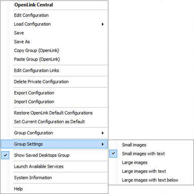
|
Menu Item |
Description |
|
Small Images |
Displays services as small icon images. 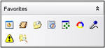 |
|
Small Images With Text |
Displays services as small icon images followed by the service name. |
|
Large Images |
Displays services as large icon images. |
|
Large Images With Text |
Displays services as large icon images followed by the service name. 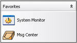 |
|
Large Images With Text Below |
Displays services as large icon images with the service name located beneath the image. 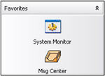 |
Right-clicking on a service displays additional menu items. The Service Configuration menu displays options for configuring the selected group.
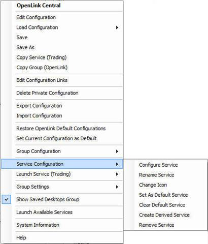
|
Menu Item |
Description |
|
Configure Service |
Displays the OpenLink Central Configurations window with the Button Configuration tab selected. |
|
Rename Service |
Allows the service to be renamed directly within the Sidebar panel. |
|
Change Icon |
Opens the Choose Icon window which provides a pick list of available icons. Select an icon for the service and click OK.
|
|
Set As Default Service |
This menu item sets the AB_AFE_LAUNCH_SERVICE system wide configuration variable to the selected service. This service will then launch at startup. |
|
Clear Default Service |
This menu item clears the service from the AB_AFE_LAUNCH_SERVICE system wide configuration variable. |
|
Create Derived Service |
Displays the OpenLink Central Config: Add Service window. This window is used to add third party services to the system. 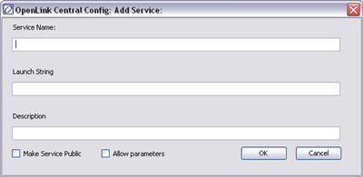 |
|
Remove Service |
Removes the selected service from the group. |
|
Keep Item in Most Recently Used |
NOTE: This menu item is only available when right-clicking on a service in the Recently Used group. This group tracks the last 10 services that have been launched. If a service already appears in this group, it is moved to the top. If the group already contains 10 items and a previously un-launched service is run, the oldest item is removed from the list. If this menu item is checked for an item in the Recently Used group, it will not be removed when other services are launched. Below is an example of this behavior. This functionality has been removed in V12.1 and above. |
The OpenLink Central Sidebar provides a user with the ability to modify the current configuration within the panel itself, without launching the Edit Configuration dialog. The following is a description of these editing features.
Groups can be easily reordered using drag-and-drop functionality. Click on the header of a group to be moved and drag it to a new location. Note: The “Saved Desktops” group cannot be moved in this panel.
In the example below the group “Group 3” will be moved in between “Group 1” and “Group 2”.
|
|
|
Similar to reordering groups, the services within the groups can be reordered using drag-and-drop functionality. In the following example, the “Market Manager” service was moved between “OpenLink Desktop” and “Trading Explorer” services.
Note: This does not apply to the “Saved Desktops” group.
|
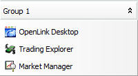 |
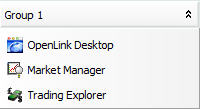 |
In addition to changing the order of services within a group, services can be dragged from one group and moved to another using drag-and-drop functionality. In the following example, the “OpenLink Desktop” service was moved from Group 1 to Group 2.
Note: This does not apply to the “Saved Desktops” group.
Services can be copied between and within groups in a manner similar to drag-and-drop. In this case, a service is copied by holding down the CTRL keyboard key prior to dropping the service in the new location. When the CTRL key is pressed, the cursor will change to display a “+” symbol. When this symbol is present, the operation will be a copy operation. If the symbol is not present, the operation will be a move operation.
Note: This does not apply to the “Saved Desktops” group.
In the following example, the “OpenLink Desktop” service was copied from Group 2 to Group 1.
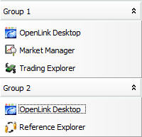
The OpenLink Central Sidebar can be dragged and docked in another position in the desktop window or dropped elsewhere on a user’s monitor.
1. Use the mouse pointer to grab the sidebar and drag it.
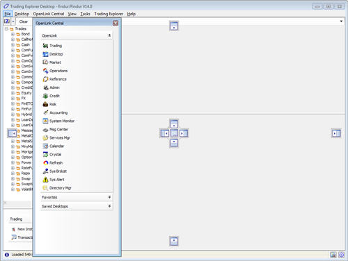
2. Use the navigational arrows to dock the sidebar into another position within the desktop.
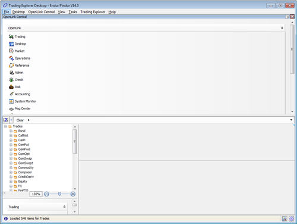
OR
3. Drop the Sidebar in a convenient location on the monitor.
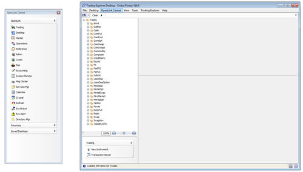